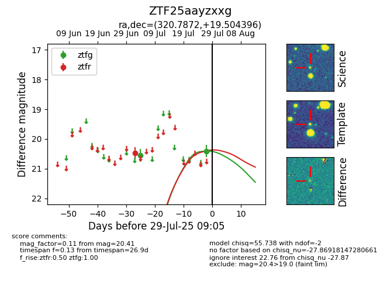

Target ZTF25aayzxxg at 2025-07-29 09:05, see:
FINK: fink-portal.org/ZTF25aayzxxg
Lasair: lasair-ztf.lsst.ac.uk/objects/ZTF25aayzxxg
ALeRCE: alerce.online/object/ZTF25aayzxxg
alt names
ZTF25aayzxxg (ztf,fink)
coordinates:
equatorial (ra, dec) = (320.7872,+19.50440)
galactic (l, b) = (69.9839,-21.30983)
photometry
last ztfg=20.41, ztfr=20.48
2 ztfg, 1 ztfr detections
